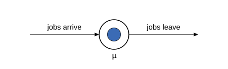

Jobs, servers, and service times
Queueing theory is the mathematics of waiting in line. It needs only three ideas to start.
A job is a unit of work: a customer at a counter, a print request, a compute task. A server is the resource that does the work. A server works on one job at a time. The service time is how long the work takes. Service times vary from job to job, so we model the service time as a random variable: each job's service time is a fresh draw from a probability distribution.
Here is the whole picture so far — one server, jobs passing through it:
s = server(Point(0, 0), 30; inservice = 1, label = L"\mu")
flow(Point(-170, 0), s.entry; label = "jobs arrive")
flow(s.exit, Point(170, 0); label = "jobs leave")
The label $\mu$ (mu) is the service rate: the average number of jobs the server can finish per unit of time. If the mean service time is half a minute, then $\mu = 2$ per minute. Rate and mean are reciprocals: $E[S] = 1/\mu$, where $S$ is the service time.
Building it in Concourse
Concourse describes a queueing system as a small network. Even the lone server needs three pieces: a source that creates jobs, a station that holds the server, and a sink where finished jobs go. route! wires them together, and compile freezes the description into a runnable model.
using Concourse
net = QueueNetwork(param_names = (:lambda, :mu))
source!(net, :arrive; interarrival = Law(:Exponential, scale = inv(Param(:lambda))))
station!(net, :desk; discipline = FCFS(), servers = 1,
service = Law(:Exponential, scale = inv(Param(:mu))))
sink!(net, :done)
route!(net, :arrive, Always(:desk))
route!(net, :desk, Always(:done))
m = compile(net)Three things to notice.
- A
Lawis a recipe for a probability distribution.Law(:Exponential, scale = inv(Param(:mu)))means "an exponential distribution whose scale is $1/\mu$" — that is, mean service time $1/\mu$.Param(:mu)refers to an entry of a parameter vector $\theta$ that we supply at run time, so the same model can be simulated at many rates. FCFS()is the queue discipline: first come, first served. Jobs are served in arrival order. Disciplines get their own page.- The source draws the times between arrivals from its own law. Arrivals are the subject of the next page; for now they are just a way to feed the server some jobs.
compile turns the network into a generalized semi-Markov process (GSMP) — plain data that the simulator interprets. You will not need that term again in this tutorial, but it is the object every later feature builds on.
What a simulation produces
simulate runs the model forward. It takes the parameter vector $\theta$ (here $\lambda = 1$ arrival per minute, $\mu = 2$ services per minute), a time horizon, and a random seed. What it returns is a record: the list of every event that fired, with its time.
θ = [1.0, 2.0]
rec = simulate(m, θ, 6.0; seed = 3)
for (key, t) in zip(rec.key, rec.time)
println(rpad(round(t, digits = 3), 8), key)
end1.47 (:arrival, 1, 0)
1.6 (:service, 2, 1)
1.796 (:arrival, 1, 0)
2.559 (:service, 2, 2)
4.342 (:arrival, 1, 0)
4.804 (:arrival, 1, 0)
5.287 (:service, 2, 3)
5.466 (:service, 2, 4)Each line is one event. The key (:arrival, 1, 0) says "the arrival clock of station 1 (the source) fired": a new job was born. The key (:service, 2, j) says "the service clock of job j at station 2 (the desk) fired": job j finished and left. Jobs are numbered in arrival order. The record is the complete output of a simulation — every statistic on the pages that follow is computed by reading it back.
Checking the service times
The model says service times are exponential with mean $1/\mu = 0.5$ minutes. Did the simulation obey? A job's service starts when it first appears in the server slot and ends when its service event fires. replay rebuilds the full state trajectory from the record, so we can watch for both moments and measure every realized service duration.
using Statistics
rec = simulate(m, θ, 2000.0; seed = 1)
states = replay(m, rec) # states[i+1] is the state just after event i
desk = m.names[:desk]
entered = Dict{Int,Float64}() # job id => time it entered service
for (i, t) in enumerate(rec.time)
for j in states[i + 1].srv[desk]
haskey(entered, Int(j)) || (entered[Int(j)] = t)
end
end
durations = [rec.time[i] - entered[Int(k[3])]
for (i, k) in enumerate(rec.key) if k[1] == :service]
est = mean(durations)
se = std(durations) / sqrt(length(durations))
println("measured mean service time: ", round(est, digits = 4),
" ± ", round(se, digits = 4))
println("theory: 1/mu = ", 1 / θ[2])measured mean service time: 0.4954 ± 0.0109
theory: 1/mu = 0.5The measured mean lands within a couple of standard errors of $0.5$. This pattern — simulate, measure, compare against the formula — repeats on every page of this tutorial.
One more check costs nothing. Every job that arrived either left or is still inside, so the counts must balance exactly:
arrivals = count(k -> k[1] == :arrival, rec.key)
departures = count(k -> k[1] == :service, rec.key)
println(arrivals, " arrivals, ", departures, " departures, ",
number_in_system(states[end]), " still in the system")
println("conserved: ", arrivals - departures == number_in_system(states[end]))2009 arrivals, 2009 departures, 0 still in the system
conserved: trueNext: what happens when jobs arrive faster than the server can drain them — arrivals and the waiting line.